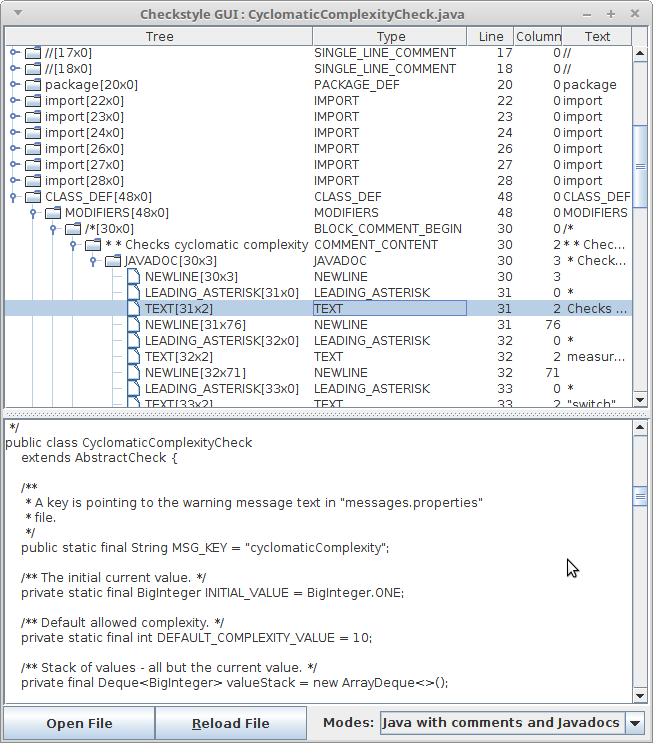

Javadoc comment is a multiline comment /* */ that starts with the *
character and placed above the class definition, interface definition, enum definition,
method definition or field definition.
If an annotation precedes any of the definitions listed above, then the javadoc comment
should be placed before the annotation.
If several multiline comments with javadoc identifiers are placed sequentially, only
the one closest to the definition, right above it, with the javadoc identifier will be used.
Javadoc comments should contain: a short summary (the first sentence), an optional
documentation section, an optional tag section. The first sentence has a special meaning
and should be clear, punchy, short, and is ended by a period symbol.
Immediately after the first sentence, the main description could begin,
which may be followed by the tag section. The tag section starts with the first block tag,
which is defined by the first @ character that begins a line
(ignoring leading asterisks, white space, and leading separator /**).
For example, here is java file:
/**
* My <b>class</b>.
*
* @see Annotation
*/
public class MyClass {
/** Not a javadoc (ignored). */
/**
* Doubles the value.
* The long and detailed explanation what the method does.
*
* @param value for doubling.
* @return double value.
*/
/*
Multiline comment (ignored).
*/
@Annotation
/** Extra javadoc (ignored). */
// Single line comment (ignored).
public int method(int value) {
/** Inner javadoc (ignored). */
return value * 2;
}
}
Javadoc content for the MyClass will be:
My <b>class</b>.
@see Annotation
Javadoc content for the MyClass.method will be:
Doubles the value.
The long and detailed explanation what the method does.
@param value for doubling.
@return double value.
Attention that java comment starts with /*, following with Identifier of
comment type. Javadoc Identifier is *. All symbols after Javadoc
Identifier till */ are part of javadoc comment.
Please note that javadoc-like (multiline comment with javadoc identifier) comment inside a method is not a javadoc comment and skipped by Sun/Oracle javadoc tool and by our javadoc comment matcher, but such comment will be in AST.
You can find different types of documentation generation tools similar to javadoc on the
Internet. Such tools rely on specific Identifier: "!", "#", "$".
Comments look like "/*! some comment */" , "/*# some comment */" ,
"/*$ some comment */". Such multiline comments are not a javadoc.
Javadoc by specification could contain any HTML tags that let user generate content he needs. All tags are copied as is to result javadoc html pages by Sun/Oracle javadoc tool. All bad formatting is responsibility of user and web-browser. To validate Checkstyle to parse input to predictable structure - Abstract Syntax Tree(AST). It is very difficult to parse free style format, so input text need to follow some format, so limitation appears.
The comment should be written in Tight-HTML to build nested AST Tree that most Checks expect.
For more details about parsing of HTML into AST read HTML Code In Javadoc Comments and Javadoc parser behavior section.
Every HTML tag should have matching end HTML tag or it is a void element.
The only exceptions are HTML 4 tags whose end tag is optional (omittable) by
HTML specification (example is
TR), so,
Checkstyle won't show error about missing end tag, however,
it leads to broken Tight-HTML structure and as a result
leads to not-nested content of the HTML tags in Abstract Syntax Tree of the Javadoc comment.
In other words, if HTML tags are not closed Javadoc grammar cannot determine content
of these tags, so structure of the parse tree will not be nested like it is while using
Tight-HTML code. It is done just to not fail on every
Javadoc comment, because there are tons of using unclosed tags, etc.
Other rules:
Principle of writing Javadoc Checks is similar to writing regular Checks. You just extend another abstract class and use another token types.
To start implementing new Check create a new class and extend AbstractJavadocCheck. It has two abstract methods you should implement:
Java grammar parses java file base on Java language specifications. So, there are singleline comments and multiline/block comments in it. Java compiler doesn't know about Javadoc because it is just a multiline comment. To parse multiline comment as a Javadoc comment, checkstyle has special Parser that is based on ANTLR Javadoc grammar. So, it's supposed to process block comments that start with Javadoc Identifier and parse them to Abstract Syntax Tree (AST).
The difference is that Java grammar uses ANTLR v2, while Javadoc grammar uses ANTLR v4. Because of that, these two grammars and their trees are not compatible. Java AST consists of DetailAST objects, while Javadoc AST consists of DetailNode objects.
Main Java grammar skips any whitespaces and newlines, so in Java Abstract Syntax Tree there are no whitespace/newline nodes. In Javadoc comment every whitespace matters, and Javadoc Checks need all those whitespaces and newline nodes to verify format and content of the Javadoc comment. Because of that Javadoc grammar includes all whitespaces, newlines to the parse tree (WS, NEWLINE).
Checkstyle can print Abstract Syntax Tree for Java and Javadoc trees. You need to run checkstyle jar file with -J argument, providing java file.
For example, here is MyClass.java file:
/**
* My <b>class</b>.
* @see AbstractClass
*/
public class MyClass {
}
Command:
java -jar checkstyle-X.XX-all.jar -J MyClass.java
Output:
CLASS_DEF -> CLASS_DEF [5:0]
|--MODIFIERS -> MODIFIERS [5:0]
| |--BLOCK_COMMENT_BEGIN -> /* [1:0]
| | |--COMMENT_CONTENT -> *\n * My <b>class</b>.\n * @see AbstractClass\n [1:2]
| | | `--JAVADOC -> JAVADOC [1:3]
| | | |--NEWLINE -> \n [1:3]
| | | |--LEADING_ASTERISK -> * [2:0]
| | | |--TEXT -> My [2:2]
| | | |--HTML_ELEMENT -> HTML_ELEMENT [2:6]
| | | | `--HTML_TAG -> HTML_TAG [2:6]
| | | | |--HTML_ELEMENT_START -> HTML_ELEMENT_START [2:6]
| | | | | |--START -> < [2:6]
| | | | | |--HTML_TAG_NAME -> b [2:7]
| | | | | `--END -> > [2:8]
| | | | |--TEXT -> class [2:9]
| | | | `--HTML_ELEMENT_END -> HTML_ELEMENT_END [2:14]
| | | | |--START -> < [2:14]
| | | | |--SLASH -> / [2:15]
| | | | |--HTML_TAG_NAME -> b [2:16]
| | | | `--END -> > [2:17]
| | | |--TEXT -> . [2:18]
| | | |--NEWLINE -> \n [2:19]
| | | |--LEADING_ASTERISK -> * [3:0]
| | | |--WS -> [3:2]
| | | |--JAVADOC_TAG -> JAVADOC_TAG [3:3]
| | | | |--SEE_LITERAL -> @see [3:3]
| | | | |--WS -> [3:7]
| | | | |--REFERENCE -> REFERENCE [3:8]
| | | | | `--CLASS -> AbstractClass [3:8]
| | | | |--NEWLINE -> \n [3:21]
| | | | `--WS -> [4:0]
| | | `--EOF -> <EOF> [4:1]
| | `--BLOCK_COMMENT_END -> */ [4:1]
| `--LITERAL_PUBLIC -> public [5:0]
|--LITERAL_CLASS -> class [5:7]
|--IDENT -> MyClass [5:13]
`--OBJBLOCK -> OBJBLOCK [5:21]
|--LCURLY -> { [5:21]
`--RCURLY -> } [7:0]
As you see very small java file transforms to a huge Abstract Syntax Tree, because that is the most detailed tree including all components of the java file: classes, methods, comments, etc.
In most cases while developing Javadoc Check, you need to only parse the tree of the exact Javadoc comment. To do that just copy Javadoc comment to separate file and remove /** at the beginning and */ at the end. After that, run checkstyle with -j argument.
MyJavadocComment.javadoc file:
* My <b>class</b>.
* @see AbstractClass
Command:
java -jar checkstyle-X.XX-all.jar \
-j MyJavadocComment.javadoc
Output:
JAVADOC -> JAVADOC [0:0]
|--LEADING_ASTERISK -> * [0:0]
|--TEXT -> My [0:2]
|--HTML_ELEMENT -> HTML_ELEMENT [0:6]
| `--HTML_TAG -> HTML_TAG [0:6]
| |--HTML_ELEMENT_START -> HTML_ELEMENT_START [0:6]
| | |--START -> < [0:6]
| | |--HTML_TAG_NAME -> b [0:7]
| | `--END -> > [0:8]
| |--TEXT -> class [0:9]
| `--HTML_ELEMENT_END -> HTML_ELEMENT_END [0:14]
| |--START -> < [0:14]
| |--SLASH -> / [0:15]
| |--HTML_TAG_NAME -> b [0:16]
| `--END -> > [0:17]
|--TEXT -> . [0:18]
|--NEWLINE -> \n [0:19]
|--LEADING_ASTERISK -> * [1:0]
|--WS -> [1:2]
|--JAVADOC_TAG -> JAVADOC_TAG [1:3]
| |--SEE_LITERAL -> @see [1:3]
| |--WS -> [1:7]
| `--REFERENCE -> REFERENCE [1:8]
| `--CLASS -> AbstractClass [1:8]
`--EOF -> <EOF> [1:21]
As you already know Javadoc parse tree is a result of parsing block comment. There is a method to get the original block comment from Javadoc Check. You may need this block comment to check its position or something else in java DetailAST tree.
For example, to write a JavadocCheck that verifies @param tags in Javadoc comment of a method definition, you also need all method's parameter names. To get method definition AST you should access java DetailAST tree from javadoc Check. For this purpose use getBlockCommentAst() method that returns DetailAST node.
Example:
class MyCheck extends AbstractJavadocCheck {
@Override
public int[] getDefaultJavadocTokens() {
return new int[]{JavadocTokenTypes.PARAMETER_NAME};
}
@Override
public void visitJavadocToken(DetailNode paramNameNode) {
String javadocParamName = paramNameNode.getText();
DetailAST blockCommentAst = getBlockCommentAst();
if (BlockCommentPosition.isOnMethod(blockCommentAst)) {
DetailAST methodDef = blockCommentAst.getParent();
DetailAST methodParam = findMethodParameter(methodDef);
String methodParamName = methodParam.getText();
if (!javadocParamName.equals(methodParamName)) {
log(methodParam, "params.dont.match");
}
}
}
}
Checkstyle supports HTML4 tags in Javadoc comments: all HTML4 elements .
HTML4 is picked just to have a list of elements whose end tag is optional(omittable) and a list of void elements (also known as empty html tags, for example BR tag).
HTML4 elements whose end tag is optional (omittable): <P>, <LI>, <TR>, <TD>, <TH>, <BODY>, <COLGROUP>, <DD>, <DT>, <HEAD>, <HTML>, <OPTION>, <TBODY>, <THEAD>, <TFOOT>.
Void HTML4 elements: <AREA>, <BASE>, <BASEFONT>, <BR>, <COL>, <FRAME>, <HR>, <IMG>, <INPUT>, <ISINDEX>, <LINK>, <META>, <PARAM>.
To make Checkstyle support HTML5 tags whose end tag is optional (omittable) and HTML5 void elements we should update Javadoc Parser because each element that breaks Tight-HTML rules have to be defined in Javadoc grammar. In the future, we should update Javadoc grammar if those tag lists extend (new tags, new HTML standard, etc.). (We already have an issue on updating Javadoc grammar to HTML5)
If Checkstyle meets unknown tag (for example HTML5 tag) it doesn't fail and parses this tag as HTML_TAG Javadoc token type. Just follow Tight-HTML rules to make Checkstyle javadoc parser make nested AST, even though tags are unknown.
<audio><source src="horse.ogg" type="audio/ogg"/></audio>
JAVADOC -> JAVADOC [0:0]
|--HTML_ELEMENT -> HTML_ELEMENT [0:0]
| `--HTML_TAG -> HTML_TAG [0:0]
| |--HTML_ELEMENT_START -> HTML_ELEMENT_START [0:0]
| | |--START -> < [0:0]
| | |--HTML_TAG_NAME -> audio [0:1]
| | `--END -> > [0:6]
| |--HTML_ELEMENT -> HTML_ELEMENT [0:7]
| | `--SINGLETON_ELEMENT -> SINGLETON_ELEMENT [0:7]
| | `--EMPTY_TAG -> EMPTY_TAG [0:7]
| | |--START -> < [0:7]
| | |--HTML_TAG_NAME -> source [0:8]
| | |--WS -> [0:14]
| | |--ATTRIBUTE -> ATTRIBUTE [0:15]
| | | |--HTML_TAG_NAME -> src [0:15]
| | | |--EQUALS -> = [0:18]
| | | `--ATTR_VALUE -> "horse.ogg" [0:19]
| | |--WS -> [0:31]
| | |--ATTRIBUTE -> ATTRIBUTE [0:32]
| | | |--HTML_TAG_NAME -> type [0:32]
| | | |--EQUALS -> = [0:36]
| | | `--ATTR_VALUE -> "audio/ogg" [0:37]
| | `--SLASH_END -> /> [0:49]
| `--HTML_ELEMENT_END -> HTML_ELEMENT_END [0:51]
| |--START -> < [0:51]
| |--SLASH -> / [0:52]
| |--HTML_TAG_NAME -> audio [0:53]
| `--END -> > [0:58]
`--EOF -> <EOF> [0:59]
Here is what you get if unknown tag doesn't have matching end tag (for example, HTML5 tag
<audio>):
Input:
<audio>test
[ERROR:0] Javadoc comment at column 1 has parse error. Missed HTML close tag 'audio'.
Sometimes it means that close tag missed for one of previous tags.
As you see Javadoc parser prints error and doesn't build AST if unknown HTML tag doesn't have matching end tag. If that a case please create an issue against Checkstyle to upgrade parser.
There are also HTML tags that are marked as "Not supported in HTML5"
(HTML Element Reference).
Checkstyle Javadoc parser can parse those tags too if they are written in
Tight-HTML.
Example.
Input:
<acronym title="as soon as possible">ASAP</acronym>
JAVADOC -> JAVADOC [0:0]
|--HTML_ELEMENT -> HTML_ELEMENT [0:0]
| `--HTML_TAG -> HTML_TAG [0:0]
| |--HTML_ELEMENT_START -> HTML_ELEMENT_START [0:0]
| | |--START -> < [0:0]
| | |--HTML_TAG_NAME -> acronym [0:1]
| | |--WS -> [0:8]
| | |--ATTRIBUTE -> ATTRIBUTE [0:9]
| | | |--HTML_TAG_NAME -> title [0:9]
| | | |--EQUALS -> = [0:14]
| | | `--ATTR_VALUE -> "as soon as possible" [0:15]
| | `--END -> > [0:37]
| |--TEXT -> ASAP [0:38]
| `--HTML_ELEMENT_END -> HTML_ELEMENT_END [0:42]
| |--START -> < [0:42]
| |--SLASH -> / [0:43]
| |--HTML_TAG_NAME -> acronym [0:44]
| `--END -> > [0:51]
`--EOF -> <EOF> [0:52]
More examples:
| 1) Unclosed paragraph HTML tag. As you see in the tree, content of the paragraph tag is not nested to this tag. That is because HTML tags are not closed by pair tag </p>, and Checkstyle requires Tight-HTML code to predictably parse Javadoc comments. | 2) Here is correct version with open and closed HTML tags. |
<p> First
<p> Second
|
<p> First </p>
<p> Second </p>
|
JAVADOC -> JAVADOC [0:0]
|--HTML_ELEMENT -> HTML_ELEMENT [0:0]
| `--P_TAG_START -> P_TAG_START [0:0]
| |--START -> < [0:0]
| |--P_HTML_TAG_NAME -> p [0:1]
| `--END -> > [0:2]
|--TEXT -> First [0:3]
|--NEWLINE -> \n [0:9]
|--HTML_ELEMENT -> HTML_ELEMENT [1:0]
| `--P_TAG_START -> P_TAG_START [1:0]
| |--START -> < [1:0]
| |--P_HTML_TAG_NAME -> p [1:1]
| `--END -> > [1:2]
|--TEXT -> Second [1:3]
`--EOF -> <EOF> [1:10]
|
JAVADOC -> JAVADOC [0:0]
|--HTML_ELEMENT -> HTML_ELEMENT [0:0]
| `--PARAGRAPH -> PARAGRAPH [0:0]
| |--P_TAG_START -> P_TAG_START [0:0]
| | |--START -> < [0:0]
| | |--P_HTML_TAG_NAME -> p [0:1]
| | `--END -> > [0:2]
| |--TEXT -> First [0:3]
| `--P_TAG_END -> P_TAG_END [0:10]
| |--START -> < [0:10]
| |--SLASH -> / [0:11]
| |--P_HTML_TAG_NAME -> p [0:12]
| `--END -> > [0:13]
|--NEWLINE -> \n [0:14]
|--HTML_ELEMENT -> HTML_ELEMENT [1:0]
| `--PARAGRAPH -> PARAGRAPH [1:0]
| |--P_TAG_START -> P_TAG_START [1:0]
| | |--START -> < [1:0]
| | |--P_HTML_TAG_NAME -> p [1:1]
| | `--END -> > [1:2]
| |--TEXT -> Second [1:3]
| `--P_TAG_END -> P_TAG_END [1:11]
| |--START -> < [1:11]
| |--SLASH -> / [1:12]
| |--P_HTML_TAG_NAME -> p [1:13]
| `--END -> > [1:14]
`--EOF -> <EOF> [1:15]
|
Checks can also be configured to log violation on encountering non-tight HTML tags.
violateExecutionOnNonTightHtml property can be used for this purpose in the checks
that support it. A custom check needs to extend AbstractJavadocCheck for having
this functionality readily available. Do note that a check which has this property set to
true will log violation only for the first not-tight HTML tag found. To allow a check to
skip processing of javadocs with non-tight HTML, method
acceptJavadocWithNonTightHtml in class AbstractJavadocCheck can be
overridden in the check. The following example illustrates how to use this property.
Input:
/**
* <body>
* <p> This class is only meant for testing. </p>
* <p> This p tag is not closed. It is non-tight. Will lead to violations if
* <tt>violateExecutionOnNonTightHtml</tt> is set to true for the check.
* <li>tight li tag <p>non-tight p tag, but only the 1st non-tight tag is logged in violation</li>
* </body>
*/
public class Test {
/**
<p><p>
paraception. Will result in a violation from the <tt>JavadocParagraph</tt> check due to
redundant tags.
</p></p>
*/
private int field1;
/**<tr> Zero </p> nesting despite `tr` is closed </tr>*/
private int field2;
/**
* <p> this paragraph is closed and would be nested in javadoc tree </p>
* <li> this list has an <p> unclosed para, but still the list would get nested </li>
*/
private int field3;
/**
* <li> Complete <p> nesting </p> </li>
*/
private int field4;
}
Output with violateExecutionOnNonTightHtml set to false:
<!DOCTYPE module PUBLIC
"-//Checkstyle//DTD Checkstyle Configuration 1.3//EN"
"https://checkstyle.org/dtds/configuration_1_3.dtd">
<module name="Checker">
<module name="TreeWalker">
<module name="JavadocParagraph">
<property name="violateExecutionOnNonTightHtml" value="false"/>
</module>
</module>
</module>
|
Starting audit...
[ERROR] Test.java:11: Redundant <p> tag. [JavadocParagraph]
Audit done.
Checkstyle ends with 1 errors.
|
Output with violateExecutionOnNonTightHtml set to true:
<!DOCTYPE module PUBLIC
"-//Checkstyle//DTD Checkstyle Configuration 1.3//EN"
"https://checkstyle.org/dtds/configuration_1_3.dtd">
<module name="Checker">
<module name="TreeWalker">
<module name="JavadocParagraph">
<property name="violateExecutionOnNonTightHtml" value="true"/>
</module>
</module>
</module>
|
Starting audit...
[ERROR] Test.java:4: Unclosed HTML tag found: p [JavadocParagraph]
[ERROR] Test.java:11: Redundant <p> tag. [JavadocParagraph]
[ERROR] Test.java:11: Unclosed HTML tag found: p [JavadocParagraph]
[ERROR] Test.java:18: Unclosed HTML tag found: tr [JavadocParagraph]
[ERROR] Test.java:23: Unclosed HTML tag found: p [JavadocParagraph]
Audit done.
Checkstyle ends with 5 errors.
|
Checkstyle GUI allows to show javadoc tree in java files. To run in use
java -cp checkstyle-10.14.0-all.jar com.puppycrawl.tools.checkstyle.gui.Main
and choose "JAVA WITH JAVADOC MODE" in dropdown list in bottom of frame.
Now you can see parsed javadoc tree as child of comment block.

Notice that only files with ".java" extension can be opened.
For detail reference you can see Checkstyle GUI documentation .
Java checks controlled by method setTokens(), getDefaultTokens(), getAccessibleTokens(), getRequiredTokens(). JavaDoc checks use the same model plus extra 4 methods for Javadoc tokens. As Java AST and Javadoc AST are not binded. It is highly recommended for Javadoc checks do not use customization of java tokens and expect to be executed only on javadoc tokens.
There are four methods in AbstractJavadocCheck class to control the processed JavadocTokenTypes - one setter setJavadocTokens(), which is used to define a custom set (which is different from the default one) of the processed JavadocTokenTypes via config file and three getters, which have to be overridden: getDefaultJavadocTokens(), getAcceptableJavadocTokens(), getRequiredJavadocTokens().
Javadoc Checks as well as regular Checks extend AbstractCheck class. So integrating new Javadoc Check is similar to integrating other Checks.
The best source knowledge about how to write Javadoc Checks could be taken from existing Checks .
This section shows how parser should/will behave during parsing of current HTML version and any new HTML version. Current version is HTML4, new version that need to be supported is HTML5. GeneralToken - mean that after parsing there will be general AstToken - HTML_TAG. SpecialToken - mean that after parsing there will be special AstToken - PARAGRAPH, .... .
Tags with optional (omittable) end tag:
| Input | Current standard (HTML4) | Current standard with hasUnclosedTag flag | After parser update for new standard (HTML5) | After parser update for new standard with hasUnclosedTag flag |
|---|---|---|---|---|
| <p>text</p> | No errors, Nested tree, SpecialToken | No errors, Nested tree, SpecialToken, hasUnclosedTag=false | No errors, Nested tree, SpecialToken | No errors, Nested tree, SpecialToken, hasUnclosedTag=false |
| <p>text | No errors, Non-nested tree, SpecialToken | No errors, Non-nested tree, SpecialToken, hasUnclosedTag=true | No errors, Non-nested tree, SpecialToken | No errors, Non-nested tree, SpecialToken, hasUnclosedTag=true |
|
<rb>text</rb>
New HTML5 tag with optional (omittable) end tag |
No errors, Nested tree, GeneralToken | No errors, Nested tree, GeneralToken, hasUnclosedTag=false | No errors, Nested tree, SpecialToken | No errors, Nested tree, SpecialToken, hasUnclosedTag=false |
|
<rb>text
New HTML5 tag with optional (omittable) end tag |
Parse error | Parse error | No errors, Non-nested tree, SpecialToken | No errors, Non-nested tree, SpecialToken, hasUnclosedTag=true |
|
<qwerty>text</qwerty>
Unknown HTML tag |
No errors, Nested tree, GeneralToken | No errors, Nested tree, GeneralToken, hasUnclosedTag=false | No errors, Nested tree, GeneralToken | No errors, Nested tree, GeneralToken, hasUnclosedTag=false |
|
<qwerty>text
Unknown HTML tag |
Parse error | Parse error | Parse error | Parse error |
Void tags:
Note: "Nested"/"Non-Nested" is not applicable for this type of tags - all of them are looks like Non-Nested. Flas "hasUnclosedTag" is "false" for all cases.
| Input | Current standard (HTML4) | After parser update for new standard (HTML5) |
|---|---|---|
| <br/> | No errors, SpecialToken | No errors, SpecialToken |
| <br> | No errors, SpecialToken | No errors, SpecialToken |
|
<embed/>
New HTML5 tag |
No errors, GeneralToken | No errors, SpecialToken |
|
<embed>
New HTML5 tag |
Parse Error | No errors, SpecialToken |
|
<basefont/>
Supported in HTML4. Not supported tag in HTML5 |
No errors, SpecialToken | No errors, SpecialToken |
|
<basefont>
Supported in HTML4. Not supported tag in HTML5 |
No errors, SpecialToken | No errors, SpecialToken |
|
<qwerty/>
Unknown HTML tag |
No errors, GeneralToken | No errors, GeneralToken |
|
<qwerty>
Unknown HTML tag |
Parse Error | Parse Error |